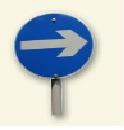
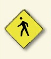
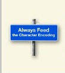

| In questo pratico glide, abbiamo bollito giù scrittura ben formati pagine HTML in un senso comune set di linee guida. Dateci un'occhiata | |||||
|  | Iniziare sempre con il . Sempre iniziare ogni pagina con un doctype. Questo sarà farti fuori con il piede giusto con i browser, e con il validatore troppo. Utilizzare in ogni momento, a meno che davvero sta scrivendo HTML 4.01 o XHTML. | ||||
 | L'elemento < html >: Non uscire di casa senza di essa. Dopo il doctype, l'elemento essere sempre la parte superiore, o radice, elemento del vostro web pag. Così, dopo il doctype, il tag < html > volontà iniziare la vostra pagina e il tag dovrebbe finirla, con tutto il resto a voi pagina nidificato all'interno.  | Ricordati di utilizzare sia la vostra < head > e la vostra
< body> per una migliore HTML. |
Solo il < head > ed elementi < body > possono andare direttamente all'interno del vostro elemento < html >. Questo significa che ogni altro elemento deve andare sia all'interno < head> o l'elemento < body >. Nessun eccezioni!  | Alimentare si < head > la codifica dei caratteri a destra. |
Includere un tag charset="utf-8"> < meta nel vostro < head >.Il browser vi ringrazierà, e così sarà gli utenti quando stanno leggendo commenti sul tuo blog da utenti di tutto il mondo. |